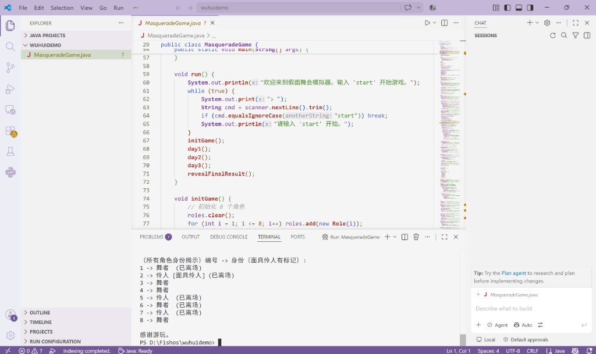

制作历程
最初的想法很简单：我太喜欢狼人杀了，但是狼人杀需要九个人玩；想尝试做一款一个人也能玩的“狼人杀”。
我希望保留狼人杀里最核心的博弈——获取信息、猜身份、做取舍…… “来个好人搏一搏”；同时仍能留下“和人说话”的感觉，而不是纯数值推演。舞会与假面只是外壳，真正想做的是：在不同风格的氛围里，重写一局可以独自沉浸的狼人杀。
正式进 Unity 之前，我先用纯文字 Java Demo 把三日流程、身份分配、离场与最终揭示跑通。尽管有不少设定源于狼人杀，但是将技能变为随机事件/流程安排/游戏内各种概率分布，许多玩法上的设计都和原来的聚会游戏有了很大区别。*我把这样一套翻新的玩法做成游戏，真的好玩吗？于是打开Unity前，我先打开了VSCode。* 那时候没有华丽画面，只有终端里简单的文字输出——但规则能不能成立，已经能在这一步初现端倪；在与朋友的多次试玩后，现在的玩法已经和最初的文字Demo有所区别，但基本都是从文字的这个小小Demo开始。
下方可以下载当时的源码，旁边是 Demo 运行时的界面截图。

文字 Demo 运行界面：身份揭示与游戏结束输出。
确定规则能跑之后，下一步是验证：能不能在 Unity 里真正“问一句、收到一句像人的答复”，即是否能够在Unity里成功调用AI。一方面是要筛选便捷可用的模型--openAI固然美丽，但昂贵的费用和网络代理的问题更没有性价比；但是离开openAI，大部分模型都没有提供足够的文档或教程表述如何在Unity中恰当地接入。那时 AI coding 远没有今天这么发达，很多对接、调试都得自己一点点抠。
最后我选择了Coze（便宜还自带人物模拟Agent）。当第一条从 Unity 发出去的消息，正确收到 AI 回复的那一刻，我非常激动——对话这条路，突然变得真实起来。下面是当时的功能验证录像。
验证通过之后，才进入真正的制作：场景与角色、三日事件、舞池判定、UI 与流程串联，以及漫长的Debug和调试。但有最初的原型和功能验证，才能在制作过程中少走很多弯路，少经历很多自我怀疑和内耗。
而最后的最后，我终于迎来了这样一个游戏：一个我重构玩法、验证功能、自己首个全栈落地实现的，一个我想要的游戏。